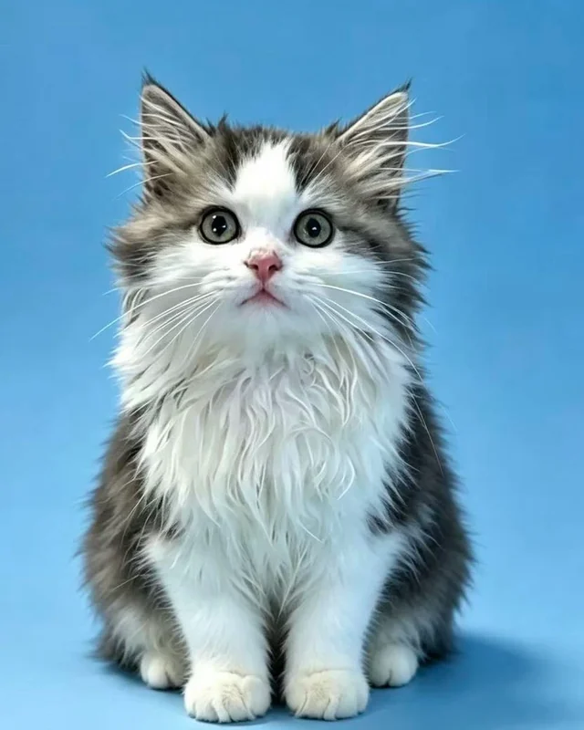
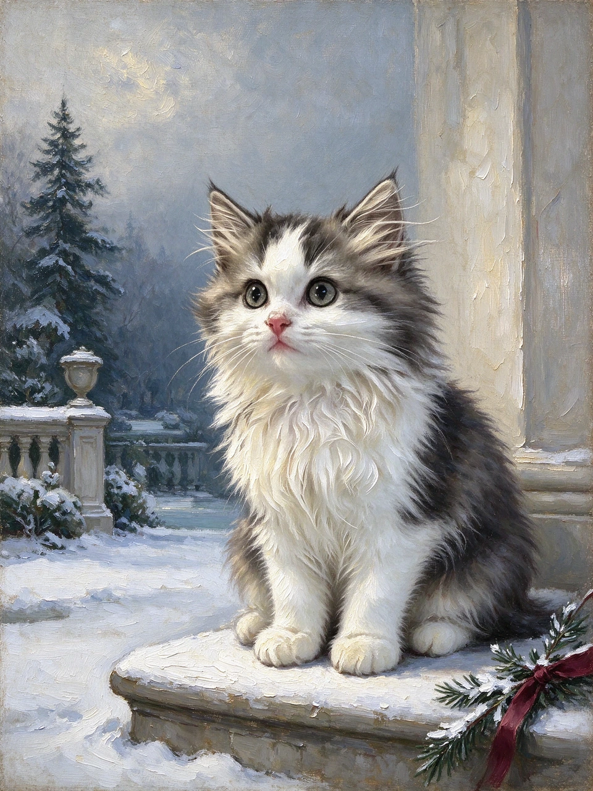
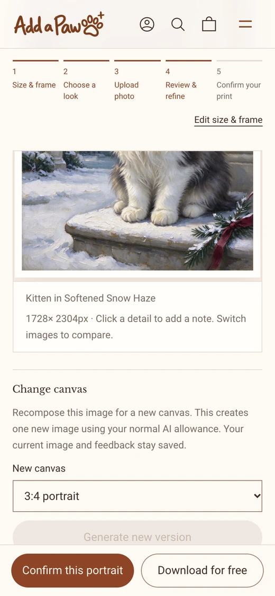
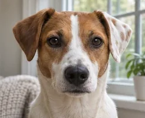
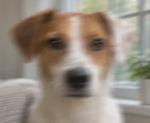

Add their photo.
A clear view of their eyes and markings makes a good starting point.

Check your photo
This optional check stays on your device. You’ll choose the original file in the live studio when you’re ready to create.
Check that the eyes look sharp and the ears have room around them.
Create your free portrait
Open live studio ↗You can go straight to the live studio. Select Continue on its print-options screen to add your photo. Digital preview and download are free. Daily preview limits apply.
Explore the studio example
A kitten in the Winter Garden
Compare the kitten’s white muzzle and forehead markings with the original photo. You can download the full composition of this first portrait.



See the refinement step

We asked to soften the trees behind the kitten and keep its face, markings and coat unchanged. The studio saved a second version titled Kitten in Softened Snow Haze.
Which photo should I choose?


More photo tips
Use a clear original in soft daylight, leave space around the ears and keep special markings in the shot. For older photos, pick the one where you can see their face best.
Full photo guide ↗